Clara Kimball Young was the first on-screen portrayal of Anne, in 1912. The title of this is unknown.
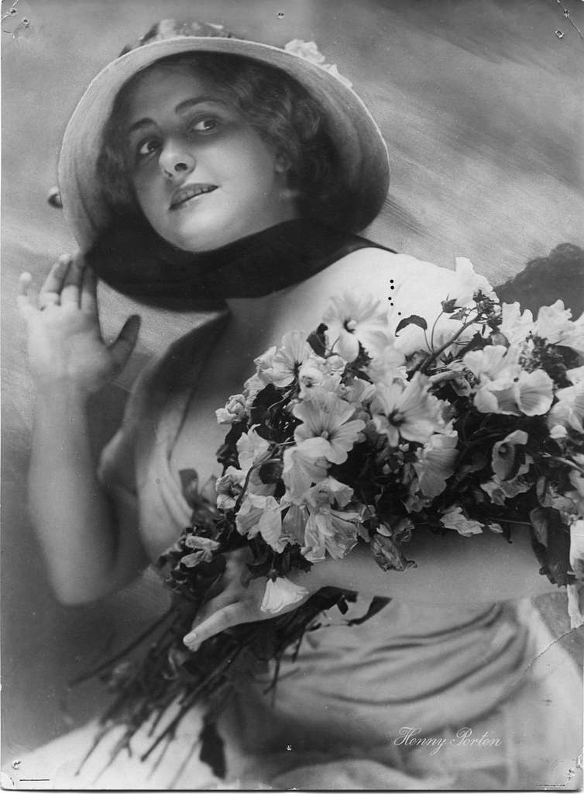
Henny Porten portrayed Anne in 1920 in Anna Boelyn.
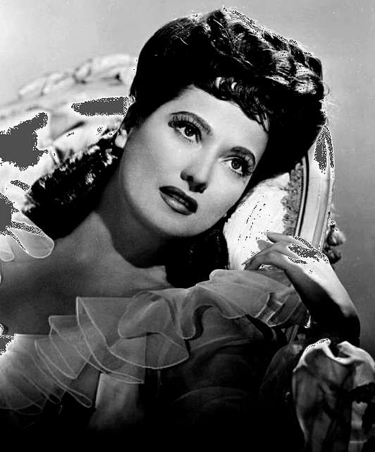
Merle Oberon portrayed Anne in 1933 in The Private Life of Henry VIII.
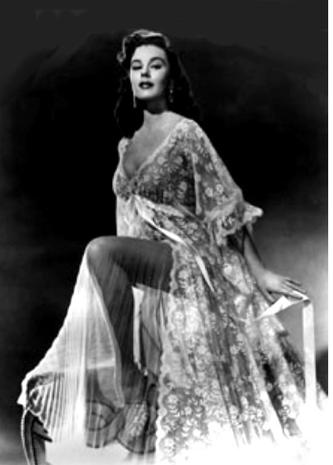
Elaine Stewart portrayed Anne in 1955 in Young Bess.
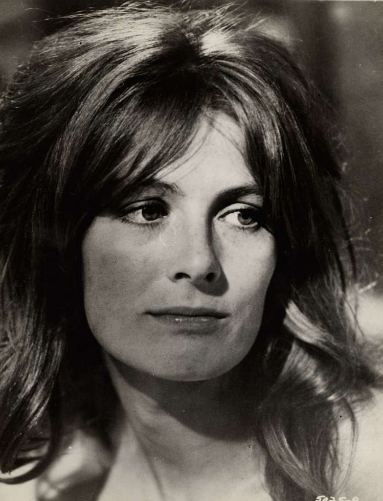
Vanessa Redgrave portrayed Anne in 1966 in A Man for All Seasons.
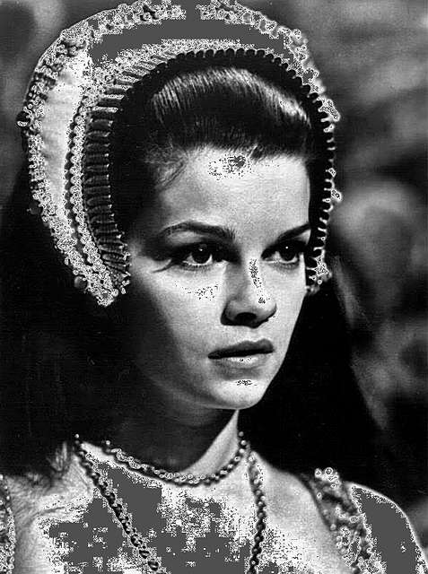
Genevieve Bujold portrayed Anne in 1969 in Anne of the Thousand Days.
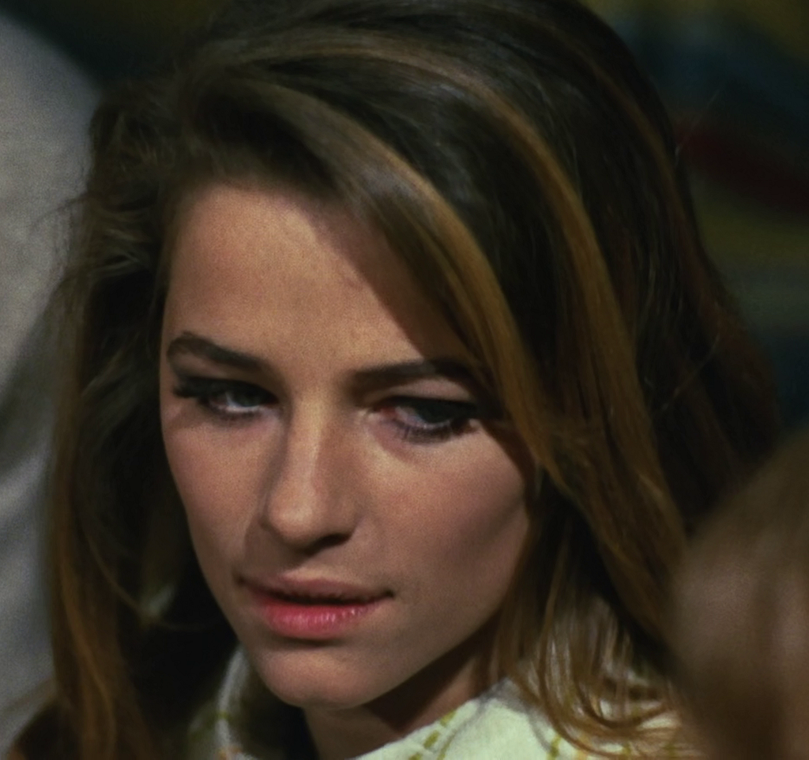
Charlotte Rampling portrayed Anne in 1972 in Henry VIII and His Six Wives. This was a remake of a 1970 TV drama.
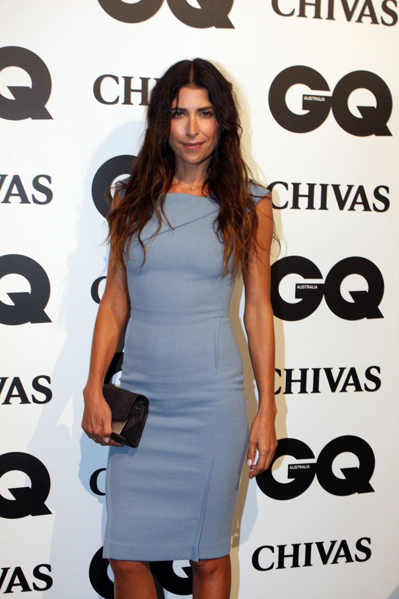
Jodhi Meares portrayed Anne in 2003 in The Other Boleyn Girl, based off the book by Philippa Gregory.
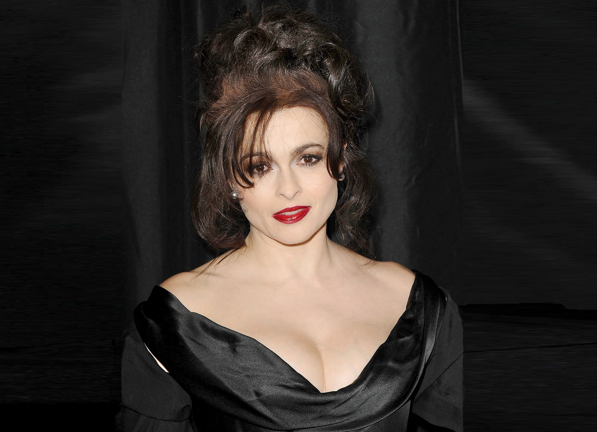
Helena Bonham Carter portrayed Anne in 2003 in Henry VIII
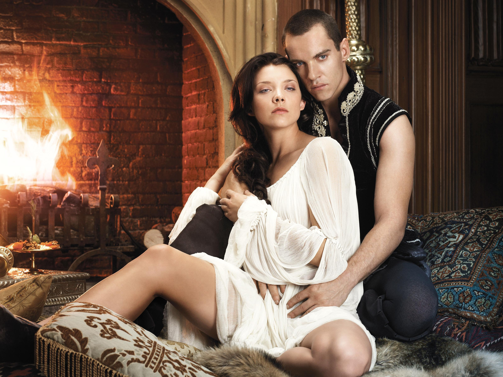
Natalie Dormer portrayed Anne in 2007-2008 in The Tudors.
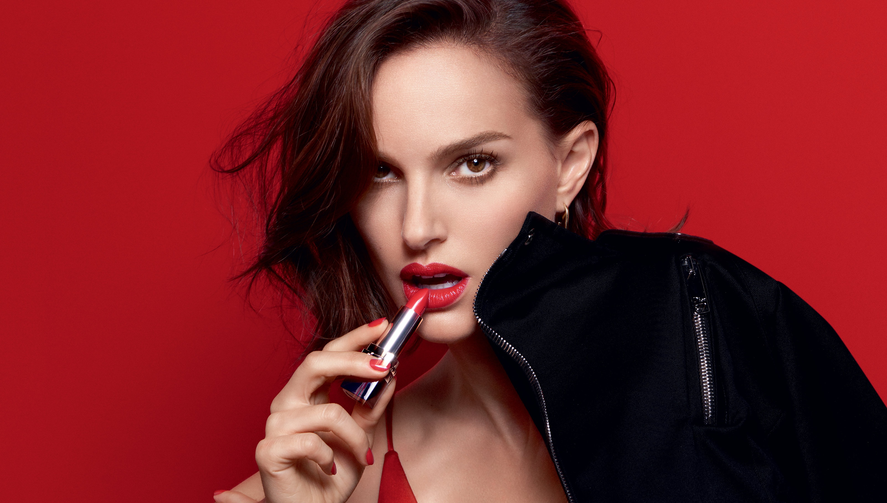
Natalie Portman portrayed Anne in 2008 in the film adaptation of The Other Boleyn Girl.
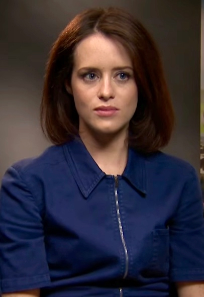
Claire Foy portrayed Anne in 2015 in Wolf Hall.
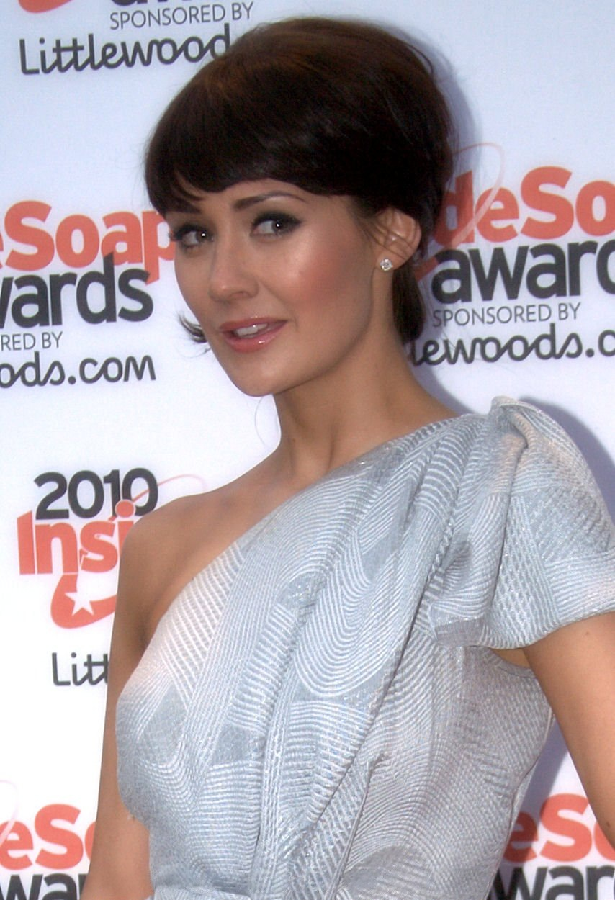
Claire Cooper portrayed Anne in 2016 in Six Wives with Lucy Worsley.
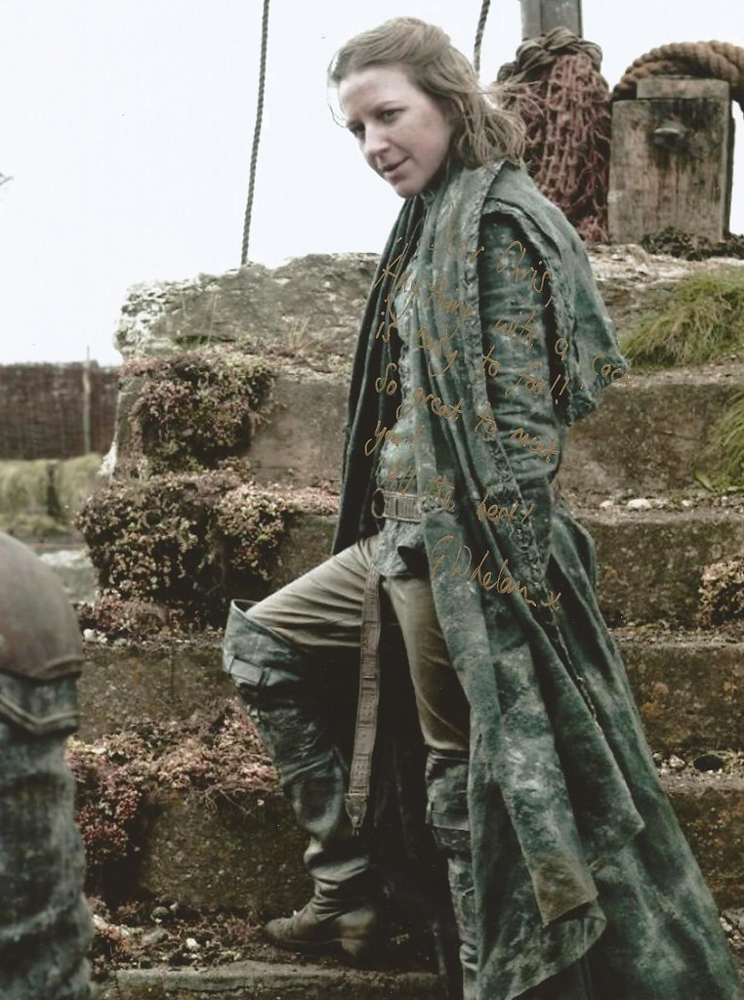
Gemma Whelan portrayed Anne in 2017 in Horrible Histories.
Jodie Turner-Smith portrayal Anne in 2021 in Anne Boleyn.
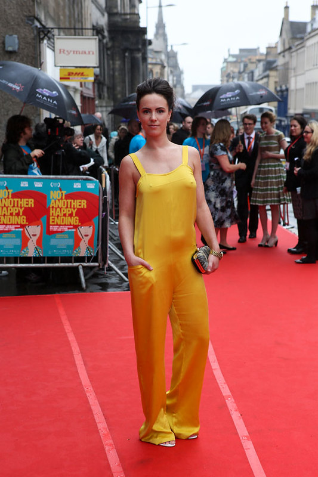
Amy Manson portrayed Anne in 2021 in Spencer.
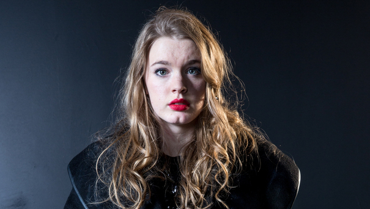
Amy James-Kelly portrayed Anne in 2022 in Blood, Sex and Royalty.